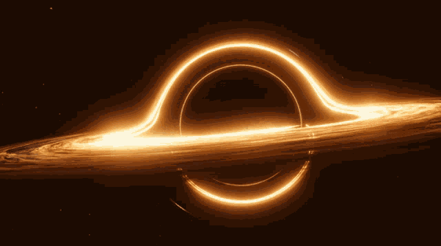
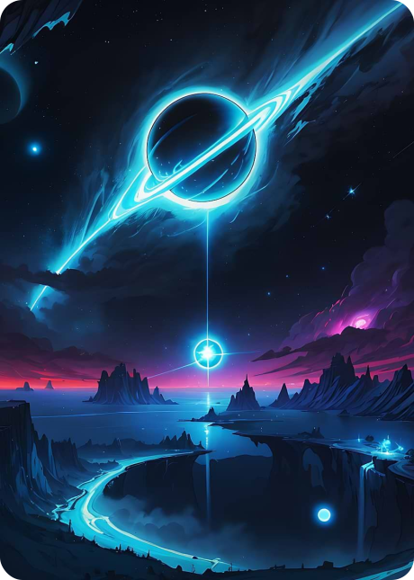

BLACK HOLE
ИНТЕРЕСНЫЕ ФАКТЫ

Конечно! Черные дыры — одни из самых загадочных и захватывающих объектов во Вселенной. Вот несколько интересных фактов о них:
1. Они невидимы, но их можно "увидеть"
Черные дыры не испускают свет, поэтому их невозможно наблюдать напрямую. Однако астрономы обнаруживают их по влиянию на окружающее пространство:
Аккреционный диск — раскалённый газ, закручивающийся вокруг черной дыры, излучает рентгеновские лучи.
Гравитационное линзирование — чёрная дыра искривляет свет звёзд и галактик позади неё.
Джет-выбросы — некоторые сверхмассивные чёрные дыры выбрасывают струи плазмы почти со скоростью света
2. Они бывают разных размеров
Звёздные чёрные дыры (3–20 масс Солнца) — образуются после взрыва сверхновой.
Среднеразмерные (100–100 000 масс Солнца) — редкие, природа их образования до конца не ясна.
Сверхмассивные (миллионы и миллиарды масс Солнца) — находятся в центрах галактик, включая нашу (Стрелец A*).
3. Они замедляют время
Из-за чудовищной гравитации время рядом с чёрной дырой течёт медленнее. Если наблюдатель смотрит на часы, падающие в чёрную дыру, он увидит, что они останавливаются у горизонта событий.
4. Они могут испаряться
Согласно Стивену Хокингу, чёрные дыры излучают энергию (излучение Хокинга) и со временем
испаряются. Правда, для сверхмассивных дыр это займёт гораздо больше времени, чем возраст
Вселенной.
5. Они могут сливаться, создавая гравитационные волны
Когда две чёрные дыры сталкиваются, они порождают рябь в пространстве-времени —
гравитационные волны. В 2015 году обсерватория LIGO впервые зафиксировала такой сигнал.
6. Внутри них может быть сингулярность
За горизонтом событий находится точка бесконечной плотности — сингулярность, где законы
физики перестают работать. Что там на самом деле, никто не знает.
7. Они могут быть "кротовыми норами"
Гипотетически, некоторые чёрные дыры могут быть входами в тоннели пространства-времени
(кротовые норы), ведущие в другие точки Вселенной. Но доказательств этому пока нет


8. Самая близкая к нам чёрная дыра
Это Gaia BH1 ( 1600 световых лет от Земли). А сверхмассивная дыра в центре Млечного Пути (Стрелец A*) находится в 27 000
световых годах от нас.
9. Они могут "звучать"
Учёные преобразовали гравитационные волны от слияния чёрных дыр в звук — получились низкие "чирикающие" звуки.
10. Они могут уничтожить информацию (или нет?)
Один из парадоксов чёрных дыр — информационный парадокс: если информация о веществе, упавшем в чёрную дыру,
исчезает, это противоречит квантовой механике. Физики до сих пор спорят, как это разрешить.
11. Чёрные дыры могут "отращивать волосы"
Согласно теории "безволосой" чёрной дыры (теорема об отсутствии волос), эти объекты описываются всего тремя
параметрами: массой, зарядом и моментом вращения. Однако новые исследования показывают, что при определённых
условиях у них могут появляться дополнительные свойства — например, "квантовые волосы", связанные с
гравитационными полями.
12. Они могут вращаться почти со скоростью света
Некоторые чёрные дыры (особенно образовавшиеся из коллапсирующих звёзд) вращаются с чудовищной скоростью.
Например, дыра в микроквазаре GRS 1915+105 делает около 1150 оборотов в секунду! Это близко к теоретическому
пределу, при котором горизонт событий может разрушиться.
13. Чёрная дыра может превратить вас в спагетти
Эффект "спагеттификации" — это когда приливные силы чёрной дыры растягивают объект в длинную тонкую нить. Если бы
человек упал в небольшую чёрную дыру (звёздной массы), его разорвало бы ещё до пересечения горизонта событий. Но в
сверхмассивной дыре (как в центре галактики) он мог бы ненадолго "прожить" внутри, пока не достиг сингулярности.
14. Они могут создавать "фонтаны" размером с галактику
Некоторые сверхмассивные чёрные дыры выбрасывают струи плазмы (джеты) на сотни тысяч световых лет. Например, в
галактике M87 джет её чёрной дыры простирается на 5000 световых лет! Эти выбросы могут влиять на целые галактики,
подавляя звездообразование.
Бонус: Существуют ли белые дыры?
Теоретически, уравнения Эйнштейна допускают существование белых дыр — объектов, в которые нельзя попасть, но
которые могут только излучать материю и энергию. Пока их не обнаружили, но если они есть, то, возможно, это "обратная
сторона" чёрных дыр в другой Вселенной!
Чёрные дыры — это настоящие космические монстры, которые бросают вызов нашему пониманию реальности. И чем больше
мы их изучаем, тем больше загадок они преподносят!